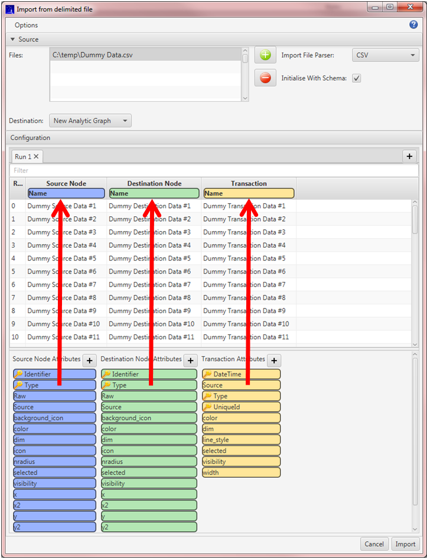

to add files.
to add files.The "Import from delimited file" window allows you to import data from the following sources:
The following is a high level workflow an analyst can follow to get the most out of the import delimited file feature follow these high level steps (explained in detail later on):
to add files.Some use full hints are:
Add files to import using the and remove a file
using the  . Once a file has been selected, the
full name will appear. If the entire file location is not visible, extend the window to see the full name.
. Once a file has been selected, the
full name will appear. If the entire file location is not visible, extend the window to see the full name.
Once you add a file, the Configuration section will display the first 100 rows of the file as a preview. The limit of 100 rows is to make the loading of the preview quick so that you can get on with the rest of the configuration activities.
If you have imported multiple files, selecting the file will update the preview in the Configuration section.
The Import File Parser defines the format of the file be it comma-separated (CSV) or tab-separated (TSV) values.
The Initialise With Schema is enabled by default and will be what you want in most scenarios. With this option enabled, it will mean that the new nodes and transactions added to the graph will follow the rules governed my the schema. For example, if this is not selected then the nodes imported will not have a label, icon and other attributes defined.
Select the destination graph from the drop down list. Note that when selecting the destination, the attributes in the configuration pane update depending on what attributes are supported by the schema of that graph.
Applying an attribute to the column is simple as dragging and dropping an attribute onto a column.
By default, not all attributes available to the selected schema are visible because there can be an overwhelming number of attributes depending on the schema. To see all possible attributes you can apply to a graph go to Options -> Show all schema attributes.
If you have a specific format for example the DateTime, then you can right click on the DateTime attribute and select the format from the drop down list or enter your own.
If you want to create your own attributes then you can by clicking on
and selecting a type and entering a label.
By default, transactions are created as directed. In the Transaction Attributes column there is a pseudo-attribute called __directed__ which can be used to create directed and undirected transactions as required. The __directed__ pseudo-attribute is a boolean that will cause a transaction to be directed when its value is (case-insensitively) "true", and undirected otherwise.
Once your configuration is finished, import the entire file with the format you have applied by clicking on the Import button located at the bottom right hand corner.
Note that the import window does not dissappear. This is so that you don't have to re-configure from the beginning. Once you are satisfied with the configuration, you have the ability to save your settings explained in the next section.
An import configuration can be saved as a template, and loaded at a later time, using the "Options" menu in the top left corner of the window.
When a template is saved, the import definition name is used to name the saved query. If a query of that name has already been saved, you will be asked if you want to overwrite it. Templates are saved in the directory HOME_DIRECTORY/.CONSTELLATION/ImportDelimited. (The name of the file in which the template is saved is encoded so it doesn't clash with file system limitations.) Files in this directory can be deleted using your favourite file management utility.
Before loading a template, you should select the files you want to import. The loaded template attempts to match the column names it knows with the column names in the current files. If a template is loaded before any files are selected, there are no columns to match against.
When you select "Load...", you will be presented with a list of saved templates. Select one from the list and select Ok. The template will be loaded and will appear as it was when it was saved.
To share the template do the following:
Note that the .json filename should not change!